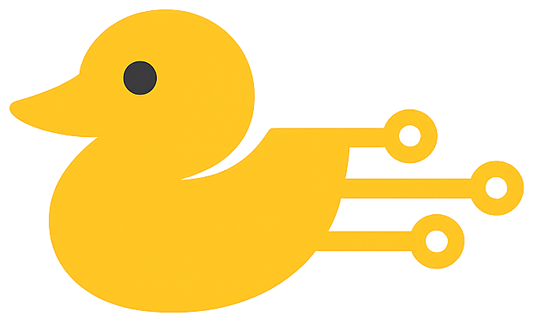
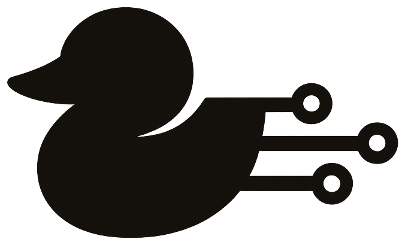

01 / Silhouette
One continuous shape — head clearly sits above the body, beak points left, body rounds off at the back. Monochrome. No outline.


A planning-first methodology for AI-assisted software development. Architect plans. Builder builds. The files remember. Chat windows are disposable; the project brain lives on disk.
Markdown on disk is the source of truth. AI sessions are interchangeable compute that read the same brain. Close any chat at any time — the project is intact.
If the rule isn't written down, the AI invents one. Specifications come from the human; execution comes from the model. Improvisation bias dies at the dry-run gate.
Big context windows don't fix vibe coding — they extend it. Each session gets only the files it needs for the job in front of it. Nothing more.
One continuous shape — head clearly sits above the body, beak points left, body rounds off at the back. Monochrome. No outline.
Two small details carry the personality — a single dark eye and a curved wing-tuck negative space on the body. Everything else stays monochromatic.
Three circuit traces leave the back of the body, each terminating in an open ring. They say this duck is wired in. Never decorative — they always exit the back of the duck, never the front.
Borrowed from the command line. Use it to end headlines, mark a CTA, or punctuate the "Quack!" Never decorative — always saying your turn.
Concentric rings under any mention of "context", "session", or "reset". A quiet reminder that the framework is about what spreads outward from clear thinking.
It's signed off every page of the framework PDF. Keep it. It's the tonal release valve — proof we know exactly what we sound like, and we do it anyway.
ADDF turns AI-assisted development into a deterministic process. Architect plans the work. Builder writes only the approved plan. The Markdown files on your disk are the project brain — chat windows are disposable.